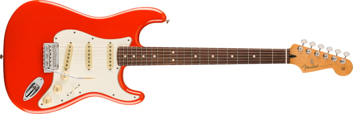
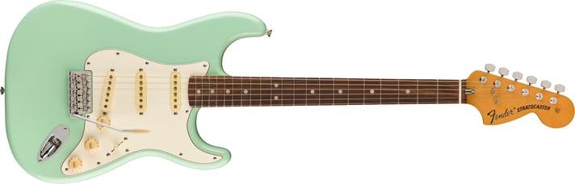
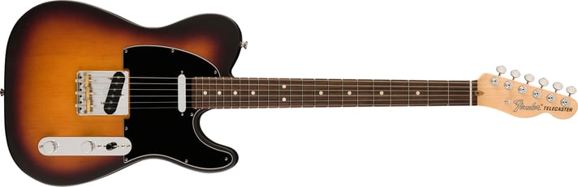
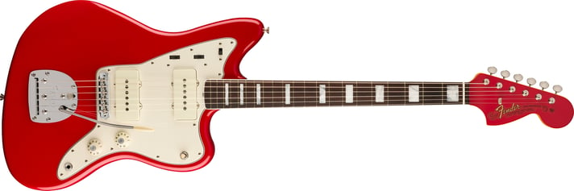
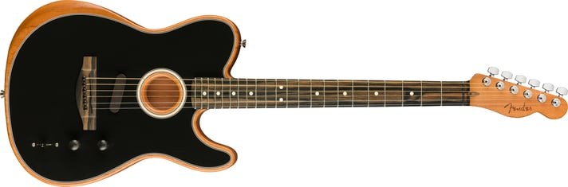
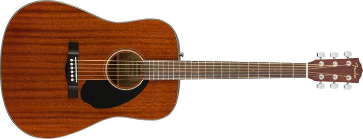

INSTRUMENTOS
FENDER STRATOCASTER
Electrica
Sea el centro de atención y experimente el sonido y el estilo icónicos de Fender® con la Player II Stratocaster®: una guitarra lista para el escenario con actualizaciones contemporáneas para potenciar su interpretación e inspirar su forma de tocar.
FENDER VINTERA
Electrica
Reviva el sonido atemporal de los años 70 con la Vintera® II '70s Stratocaster® y experimente la apariencia icónica, la sensación inspiradora y el tono incomparable que solo una Fender puede ofrecer.
FENDER TELECASTER
Electrica
Nacida en Corona, California, la American Performer Timber Telecaster de edición limitada combina un tono Fender excepcional y una sensación auténtica con materiales modernos y características orientadas al músico diseñadas para inspirar e impulsar su interpretación a nuevas alturas.
JAZZMASTER
Electrica
La serie Fender American Vintage II presenta una visión notablemente precisa de los diseños revolucionarios que alteraron el curso de la historia musical. Construido con cuerpos, mástiles y herrajes precisos de la época, acabados de primera calidad y pastillas meticulosamente sonoras específicas del año, cada instrumento captura la esencia de la auténtica artesanía y tono de Fender.
AMERICAN ACOUSTASONIC
Acustica
La American Acoustasonic® Telecaster® encarna el espíritu de innovación decidida sobre el que se construyó Fender. Desde cambios de forma acústicos hasta tonos rítmicos eléctricos, esta potente guitarra utiliza un revolucionario motor acústico diseñado por Fender y Fishman® para ofrecer una nueva expresión sonora desde el estudio hasta el escenario.
CD-60S DREADNOUGHT
Acustica
El CD-60S All-Mahogany agrega una tapa de caoba sólida a uno de nuestros modelos más populares para lograr un sabor claramente orgánico. Es ideal para instrumentistas que buscan un dreadnought asequible de alta calidad con gran tono y excelente jugabilidad. Con el nuevo mástil fácil de tocar y aros y fondo de caoba, el CD-60S All-Mahogany es perfecto para el sofá, la playa o la cafetería, en cualquier lugar donde desees la jugabilidad y el sonido clásicos de Fender.